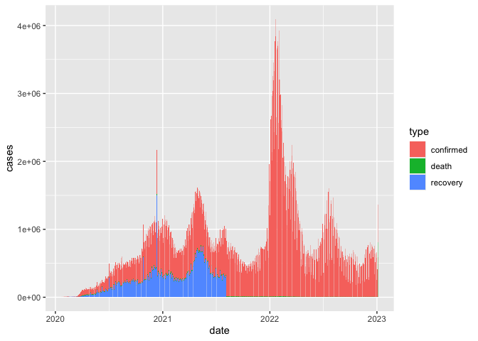

today we were working on data import, export, and conversion between data types!
first things first, we need to load tidyverse
## ── Attaching core tidyverse packages ──────────────────────── tidyverse 2.0.0 ──
## ✔ dplyr 1.1.4 ✔ readr 2.1.5
## ✔ forcats 1.0.0 ✔ stringr 1.5.1
## ✔ ggplot2 3.5.1 ✔ tibble 3.2.1
## ✔ lubridate 1.9.3 ✔ tidyr 1.3.1
## ✔ purrr 1.0.2
## ── Conflicts ────────────────────────────────────────── tidyverse_conflicts() ──
## ✖ dplyr::filter() masks stats::filter()
## ✖ dplyr::lag() masks stats::lag()
## ℹ Use the conflicted package (<http://conflicted.r-lib.org/>) to force all conflicts to become errorscoronavirus <- read_csv('https://raw.githubusercontent.com/RamiKrispin/coronavirus/master/csv/coronavirus.csv')## Rows: 919308 Columns: 15
## ── Column specification ────────────────────────────────────────────────────────
## Delimiter: ","
## chr (8): province, country, type, iso2, iso3, combined_key, continent_name,...
## dbl (6): lat, long, cases, uid, code3, population
## date (1): date
##
## ℹ Use `spec()` to retrieve the full column specification for this data.
## ℹ Specify the column types or set `show_col_types = FALSE` to quiet this message.
we have been working with this coronavirus dataset
from here
coronavirus |>
filter(cases > 0) |>
group_by(date,type) |>
summarise(cases=sum(cases)) |>
ggplot() +
geom_col(aes(date,cases,fill =type))## `summarise()` has grouped output by 'date'. You can override using the
## `.groups` argument.
this is what our data looks like
## # A tibble: 6 × 15
## date province country lat long type cases uid iso2 iso3 code3
## <date> <chr> <chr> <dbl> <dbl> <chr> <dbl> <dbl> <chr> <chr> <dbl>
## 1 2020-01-22 Alberta Canada 53.9 -117. confirm… 0 12401 CA CAN 124
## 2 2020-01-23 Alberta Canada 53.9 -117. confirm… 0 12401 CA CAN 124
## 3 2020-01-24 Alberta Canada 53.9 -117. confirm… 0 12401 CA CAN 124
## 4 2020-01-25 Alberta Canada 53.9 -117. confirm… 0 12401 CA CAN 124
## 5 2020-01-26 Alberta Canada 53.9 -117. confirm… 0 12401 CA CAN 124
## 6 2020-01-27 Alberta Canada 53.9 -117. confirm… 0 12401 CA CAN 124
## # ℹ 4 more variables: combined_key <chr>, population <dbl>,
## # continent_name <chr>, continent_code <chr>
**lets filter this raw dataset to keep only the
date,
country,province,type,and
cases
we then are piping that dataframe into filter to
only keep cases on january 3rd, 2021
## # A tibble: 852 × 5
## date country province type cases
## <date> <chr> <chr> <chr> <dbl>
## 1 2021-01-03 Canada Alberta confirmed 3800
## 2 2021-01-03 United Kingdom Anguilla confirmed 2
## 3 2021-01-03 China Anhui confirmed 0
## 4 2021-01-03 Netherlands Aruba confirmed 32
## 5 2021-01-03 Australia Australian Capital Territory confirmed 0
## 6 2021-01-03 China Beijing confirmed 2
## 7 2021-01-03 United Kingdom Bermuda confirmed 0
## 8 2021-01-03 Netherlands Bonaire, Sint Eustatius and Saba confirmed 0
## 9 2021-01-03 Canada British Columbia confirmed 0
## 10 2021-01-03 United Kingdom British Virgin Islands confirmed 0
## # ℹ 842 more rowsokay i got too lazy with marking up this file so deal with some dirty code below!!
## Rows: 18 Columns: 4
## ── Column specification ────────────────────────────────────────────────────────
## Delimiter: ","
## chr (3): Film, Race, Gender
## dbl (1): Words
##
## ℹ Use `spec()` to retrieve the full column specification for this data.
## ℹ Specify the column types or set `show_col_types = FALSE` to quiet this message.## Rows: 18 Columns: 4
## ── Column specification ────────────────────────────────────────────────────────
## Delimiter: ","
## chr (3): Film, Race, Gender
## dbl (1): Words
##
## ℹ Use `spec()` to retrieve the full column specification for this data.
## ℹ Specify the column types or set `show_col_types = FALSE` to quiet this message.## Rows: 16 Columns: 4
## ── Column specification ────────────────────────────────────────────────────────
## Delimiter: ","
## chr (3): The Fellowship Of The Ring, Hobbit, Female
## dbl (1): 14
##
## ℹ Use `spec()` to retrieve the full column specification for this data.
## ℹ Specify the column types or set `show_col_types = FALSE` to quiet this message.library(googlesheets4) #install.packages("googlesheets4")
gs4_deauth()
lotr_gs <- read_sheet("https://docs.google.com/spreadsheets/d/1X98JobRtA3JGBFacs_JSjiX-4DPQ0vZYtNl_ozqF6IE/edit#gid=754443596")## ✔ Reading from "LOTR".## ✔ Range 'tidy'.#will help turn whatever you have into a number - helpful if your data isnt read as numeric
parse_double("1,23", locale = locale(decimal_mark = ","))## [1] 1.23## Rows: 6 Columns: 5
## ── Column specification ────────────────────────────────────────────────────────
## Delimiter: ","
## chr (4): Full Name, favourite.food, mealPlan, AGE
## dbl (1): Student ID
##
## ℹ Use `spec()` to retrieve the full column specification for this data.
## ℹ Specify the column types or set `show_col_types = FALSE` to quiet this message.## # A tibble: 6 × 5
## student_id full_name favourite.food mealPlan AGE
## <dbl> <chr> <chr> <chr> <chr>
## 1 1 Sunil Huffmann Strawberry yoghurt Lunch only 4
## 2 2 Barclay Lynn French fries Lunch only 5
## 3 3 Jayendra Lyne <NA> Breakfast and lunch 7
## 4 4 Leon Rossini Anchovies Lunch only <NA>
## 5 5 Chidiegwu Dunkel Pizza Breakfast and lunch five
## 6 6 Güvenç Attila Ice cream Lunch only 6##
## Attaching package: 'janitor'## The following objects are masked from 'package:stats':
##
## chisq.test, fisher.teststudents |>
clean_names(case="lower_upper") |>
mutate(
age = parse_number(ifelse(age == "five", 5, age)))## # A tibble: 6 × 5
## studentID fullNAME favouriteFOOD mealPLAN age
## <dbl> <chr> <chr> <chr> <dbl>
## 1 1 Sunil Huffmann Strawberry yoghurt Lunch only 4
## 2 2 Barclay Lynn French fries Lunch only 5
## 3 3 Jayendra Lyne <NA> Breakfast and lunch 7
## 4 4 Leon Rossini Anchovies Lunch only NA
## 5 5 Chidiegwu Dunkel Pizza Breakfast and lunch 5
## 6 6 Güvenç Attila Ice cream Lunch only 6